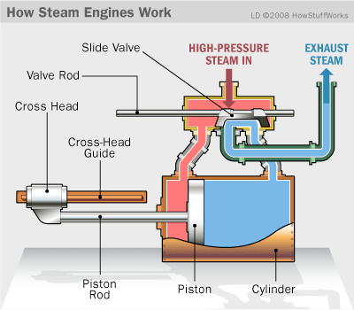
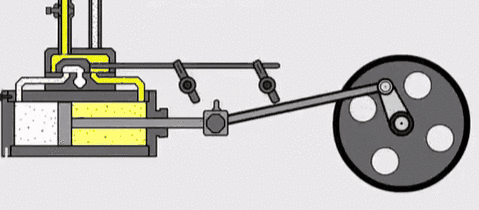
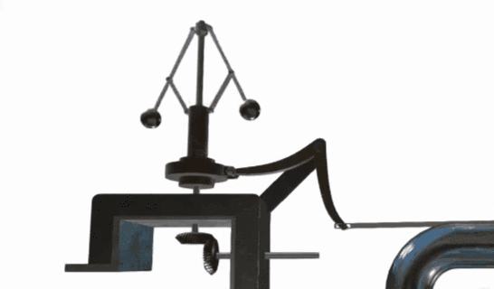

Scan the QR code below to view the 3D model by your phone!
Notice:The size of the 3D model is very large. It needs some time to load. Please wait patiently.
Using Wechat to view the 3D model is not recommended. Please try to open it with browser.
How does the Steam Engine work?
 A usefull component to control the speed
Replay